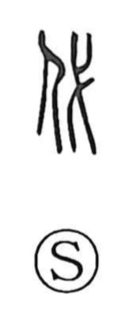

Explanation
Shirakawa reads 代 as a semantic–phonetic compound: the person element 亻 paired with 弋, which supplies sound and evokes a sacred implement. He explains 弋 as the white radiance flaring from the blade of a battleaxe (戚), a ritual instrument credited with the power to purify, exorcize, and redirect misfortune. Symbolically affixing this sign to a person signified cleansing calamity and transferring it to another, a ritual ‘renewal’ through substitution. From this act of transference the character took on the senses of replacing or changing places, and by extension change across time—generations succeeding one another (yo). In Japanese usage it also yields shiro, ‘seedling bed’ and, by extension, ‘price’ or ‘cost,’ as in nawashiro (苗代).